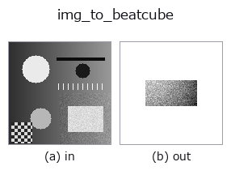

bridge op• Data kinds: image → beatcube
• Call: fullseye.apply(img, "img_to_beatcube", a=0.5, b=0.5) (the 2-D model is one image plus two scalar knobs a,b∈[0,1])

*The figure is the actual output on a synthetic 128×128 input. Left: input, right: output. Point clouds are drawn as a top-down scatter (brightness = z), 1-D series as a line plot, volumes as the maximum-intensity projection along z, videos as the middle frame, complex images as magnitude; return values that are not pictures are shown as the values themselves.*
Sweeping knob a (0.1 / 0.5 / 0.9, the other knob at its default):
▸ img_to_beatcube: knob a sweep (docs site)
Sweeping knob b (0.1 / 0.5 / 0.9, the other knob at its default):
▸ img_to_beatcube: knob b sweep (docs site)
On other images (synthetic scene / photo / coins. Top row: inputs, bottom row: their outputs. Knobs at default):
▸ img_to_beatcube: other inputs (docs site)
*The 4th column is a colour (H,W,3) input. This op handles colour without crossing channels (it does not convolve the colour channel as a third spatial axis).*
Read the bright spots of the image as FMCW radar targets (range = column, velocity = row) and synthesise the complex beat cube (A,C,S).
Picks K local maxima of the smoothed (σ=2) image in descending order of value and makes each a target:
range_m = 2 + 30 * col / W, velocity_ms = 15 * (2 * row / H - 1), amplitude = pixel value. The forward model is the ledger's fmcw_beat_simulate (rangedoppler) itself, with n_samples = 64, n_chirps = 32, n_antennas = 4 (element spacing is the default half wavelength, all targets straight ahead = angle of arrival 0°), and otherwise that function's defaults (sampling 10 MHz, sweep 20 THz/s, chirp period 50 µs, wavelength 3.89 mm). With these defaults the unambiguous range is 0 to 37.5 m in distance and ±19.5 m/s in velocity, and the mapping above stays inside it.
• a → σ of complex white noise = 0.5 * a (noise-free at a=0).
• b → number of targets K = 1 + int(b * 6) (4 at b=0.5; if there are not enough maxima, that many).
• Returns: (4, 32, 64) complex128. A 2-D FFT with tb_range_doppler_map gives a peak per target at "column → range bin, row → Doppler bin", and tb_beamform_delay_sum returns the peak at angle of arrival 0° with 4 elements.
• The random seed is fixed at 0 (deterministic). The sign of velocity follows the convention of fmcw_beat_simulate (positive = receding).
• gallery2d_bridge family guide
• Sample-data catalog (download URLs / licences) — 2-D uses skimage.data (BSD/public domain) plus synthetic images; 3-D lists download URLs for real data sources (Stanford, PDS, …).
• Operator provenance and references — the sources of the research/methods this op family came from.
• The canonical algorithm (author, year) and its uses are named in the family usage guide above.
The program below has been verified to run (same input as the figure). In Studio's help this block becomes buttons that load and run it on the spot.
img_to_beatcube 0.50 0.50
▸ Load this pipeline · Load & run
• gallery2d_bridge — py -3.11 examples/gallery2d_bridge.py
beatcube as input)identity · tb_fmcw_window_apply · tb_range_doppler_map · tb_fmcw_range_profile · tb_beamform_delay_sum
bridge)img_to_points · img_to_keypoints · img_to_signal · img_to_projection_profile · img_to_counts · img_to_matrix · img_to_video · img_to_volume
*Provenance: ops.py — 2D operator registry. This per-op note is generated by tools/opdocs.py md (do not hand-edit).*
© 2026 Kazufumi Furuse — Fullseye operator documentation. Licensed under Apache-2.0.